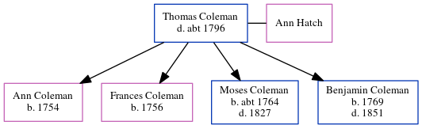

Thomas Coleman - c1796
[ Home ] | [ Calendar ] | [ Surnames Index ] | [ Errors ] | [ Family History ]Thomas Coleman, the 5 times great-grandfather of Nigel Horne, was born in Brabourne, Kent, England and married Ann Hatch (with whom he had 4 children: Ann, Frances, Moses and Benjamin) in Brabourne on 14 Apr 17512.
He died c. 1796 in Brabourne1 and was buried there on 17 Nov 17961.
Children
- Ann was born in 1754
- Frances was born in 1756
- Moses was born c. 1764
- Benjamin was born in 1769
Citations
- England, Select Deaths and Burials, 1538-1991 Ancestry.com Operations, Inc.
- Public Member Trees Online publication - Provo, UT, USA: The Generations Network, Inc., 2006.Original data - Family trees submitted by Ancestry members.Original data: Family trees submitted by Ancestry members.
Family Tree
Map
Generated by ged2site. Last updated on Jul 3, 2024
Known Issues
Birth place (Brabourne, Kent, England) has no citations